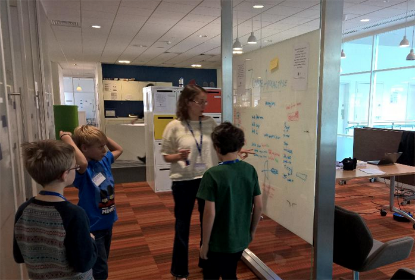

After thirteen years in children's book publishing, working on books like the Rainbow Magic fairies by Daisy Meadows, Dinosaur Cove by Rex Stone, My Sister the Vampire by Sienna Mercer and even managing the Enid Blyton publishing program at Hodder, I thought software development might be fun.
In February 2015, I joined a highly-selective full-time coding course, Makers Academy, to learn to code with Ruby and Javascript, using techniques like agile development and test driven code. Since the course, I've built native iOS apps in Swift, APIs (programs for computers to talk to each other) and even some Scratch games with my six-year-old.
I've been an Alumni Helper at Makers Academy, a mentor at Codebar and a mentor at Young Reqired State's Festival of Code (as pictured above in a stand up with three eight-year-olds, planning out a zombie apocalypse game).
Before I became a software developer, I created a website where over 2000 children helped authors write real books in weekly instalments and had my first interactive ebook project featured in the Apple iBookstore.
I'm hugely passionate about everyone learning to code and want young people from Princes Risborough, where I've lived for seven years, to leave school feeling comfortable and creative with code.
More about me:
I recommend kids stories and kids tech here: http://kidsstoriesandtech.tumblr.com You can see my code here: https://github.com/saramoohead Or see all my experience here: https://uk.linkedin.com/in/saramorlingoconnor